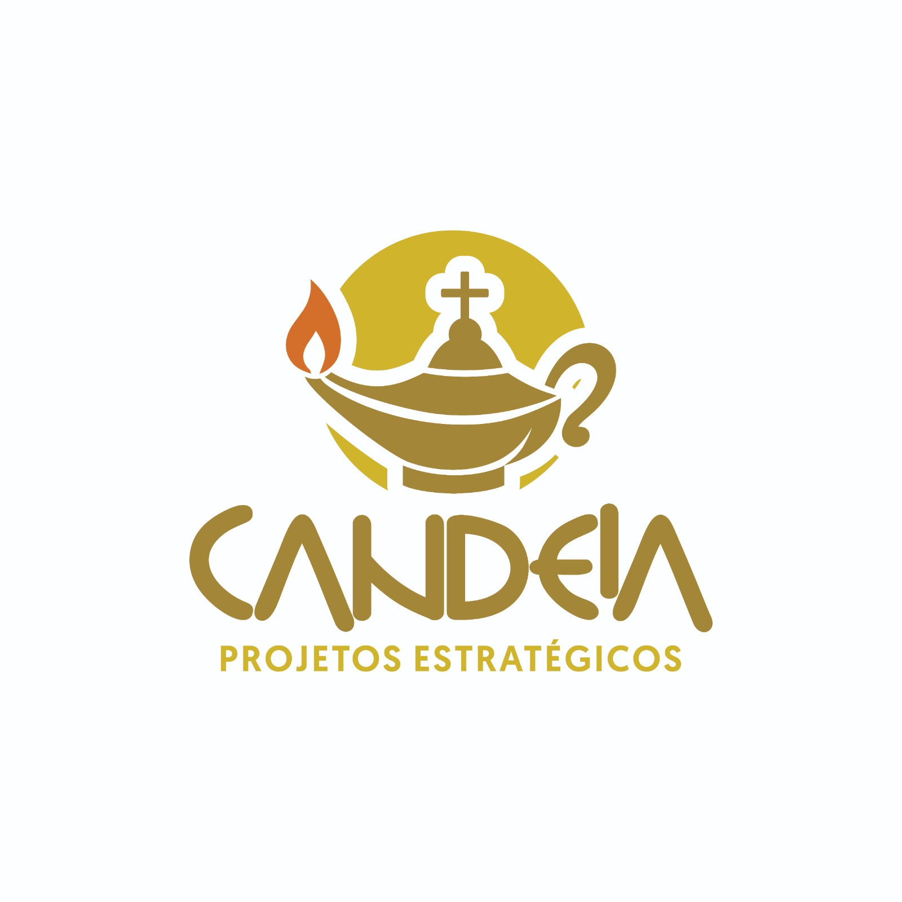
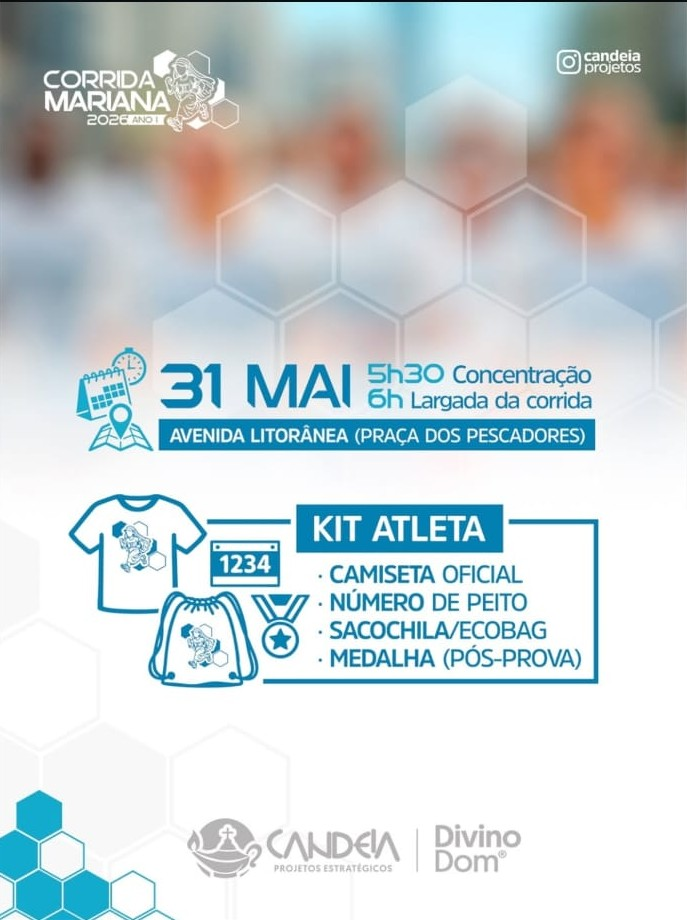

Local: Avenida Litorânea (Praça dos Pescadores)
Concentração: 5h30 | Largada: 6h
A Candeia Projetos Estratégicos nasceu com o propósito de transformar eventos em experiências memoráveis. Com foco na Corrida Mariana 2026, nossa missão é unir esporte, fé e bem-estar, proporcionando uma infraestrutura de excelência para atletas e devotos na Avenida Litorânea.
Acreditamos que cada passo dado na corrida é uma celebração da superação e da comunidade. Nosso compromisso é com a segurança, a organização impecável e o incentivo à prática esportiva integrada aos valores que nos movem.